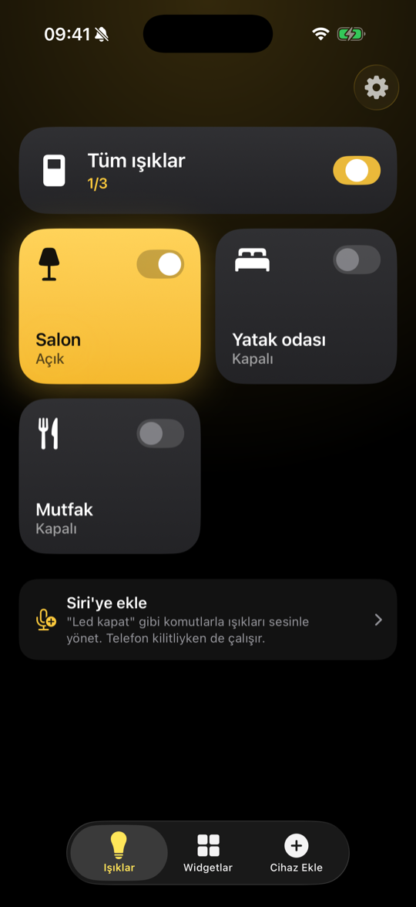
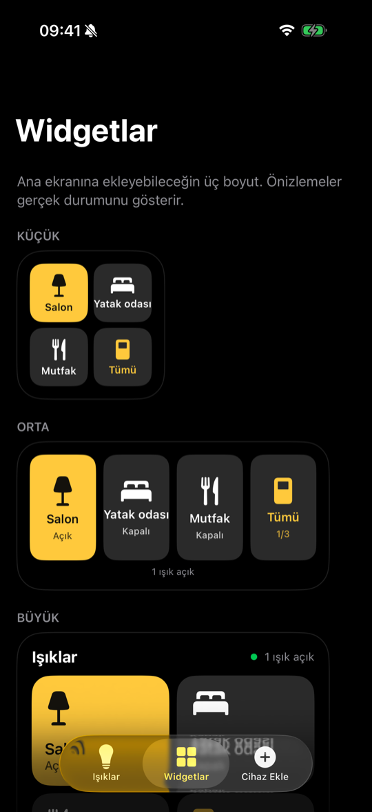
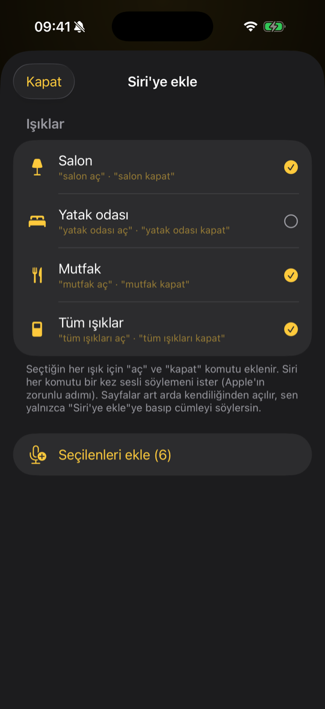

← Back to the installer · Türkçe
Nowlight setup guide
Turn a blank ESP32 into a light you switch from your phone. No coding, no software to install. About 10 minutes in total.
What you need
- One bridge board: one per home. Your phone talks to the lights through it.
- One ESP32 board per light (S3, C3, C6, S2 or classic ESP32) and a data cable (a charge-only cable does not work).
- One relay module per light and the lamp.
- A computer with Chrome or Edge (or an Android phone). Safari and iPhone cannot flash over USB.
- The Nowlight app on your iPhone.
Safety: The lamp side of the relay is mains voltage. Have someone who knows electricity do the wiring and switch the fuse off. For the first test, use low voltage only and just listen for the relay click.
Part 1: Set up the bridge (once per home)
Install the bridge firmware
On the installer page pick Bridge under What are you installing?, then pick your board. Plug the board in over USB, press Install and choose the board's port from the list. It takes about a minute.
Enter your WiFi
When the install finishes the page asks for your WiFi settings. Pick your network and type the password. The password only goes into the bridge's memory and is not sent anywhere else. Once the bridge is connected, plug it into a USB charger and put it in a corner of your home.
Connect the app
On your phone tap Nowlight → Add Device → Bridge settings → Find bridge automatically. The address and key fill in by themselves, then tap Save. The phone must be on the same WiFi as the bridge.
The setup window stays open for 10 minutes. If it closes, hold the BOOT button on the bridge for 2 seconds. The bridge follows your router's WiFi channel by itself and creates its own random ESP-NOW network key.
Part 2: Add a light (for every new light)
Install the board
On the installer page pick Light node this time, then your board (the chip name is printed on the board: ESP32-S3, C3, C6, S2). Plug it in over USB and press Install. If the port does not show up, hold the board's BOOT button while plugging in the cable, release it and try again.
Wire the relay
Connect the relay's signal pin (IN) to the board's relay output, VCC to 5V and GND to GND. The output pin is shown under your board on the installer page:
| Board | Relay output |
|---|---|
| ESP32-S3, C3, C6, S2 | GPIO5 |
| Classic ESP32 (DevKit, NodeMCU-32S) | GPIO23 |
If you used another pin you can change it in the app (Add Device → tap the device → Relay). Plug the board into a USB charger.
Pair it in the app
Tap Add Device → Add device → Search for device. Within a few seconds your board appears as Nowlight-XXXX. Tap it, choose Add as a new light, pick a name (for example Living room) and an icon, then tap Connect. Try the on and off buttons.



The app interface is currently in Turkish; an English version is planned.
Widgets and Siri (optional)
Widgets: long-press an empty spot on the home screen, tap + and add Nowlight. Long-press the widget and choose Edit Widget to pick which lights to show (up to 8).
Siri: on the Lights screen use the Add to Siri card at the bottom and select your lights. A phrase for "on" and "off" comes ready for each light, and you say each one aloud once. After that, "Hey Siri, living room off" is enough, and it works while the phone is locked.
Do not start the phrase with the word "light": Siri may hand it over to its own Home app and answer that no lights are set up in your home. A plain name like "living room off" is safe.


Something wrong?
| Problem | Fix |
|---|---|
| The installer shows no port | Use a data cable. Hold the board's BOOT button while plugging in the cable, then release it. Close any other program (Arduino, PlatformIO) that has the port open. |
| The browser says it is not supported | Use Chrome or Edge (on a computer or Android). iPhone and Safari do not work. |
| The app cannot find the device | Is the phone on the same WiFi as the bridge? If the board was just powered, wait a few seconds. If it is paired to another bridge, hold its BOOT button for 5 seconds to erase the pairing. |
| The app cannot find the bridge automatically | Hold the BOOT button on the bridge for 2 seconds (it reopens the 10-minute setup window) and try again. |
| The light works backwards | Add Device → tap the device → in the Relay section toggle Inverted logic. |
| Siri says there are no lights in your home | Do not start the phrase with "light". Use "Add to Siri" to add your own phrase. |
The software is open source: GitHub. More documentation and wiring details are in the repository.